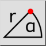
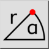
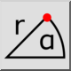
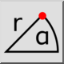

Coordenadas Polares
Barra de Ferramenta / Ícone:
 

Menu: Snap > Coordenadas Polares
Atalho: S, O
Comandos: snappolar | so
Esta é uma tradução automática.
Barra de Ferramenta / Ícone:
 

Menu: Snap > Coordenadas Polares
Atalho: S, O
Comandos: snappolar | so
Define um ponto introduzindo uma coordenada polar absoluta ou relativa.